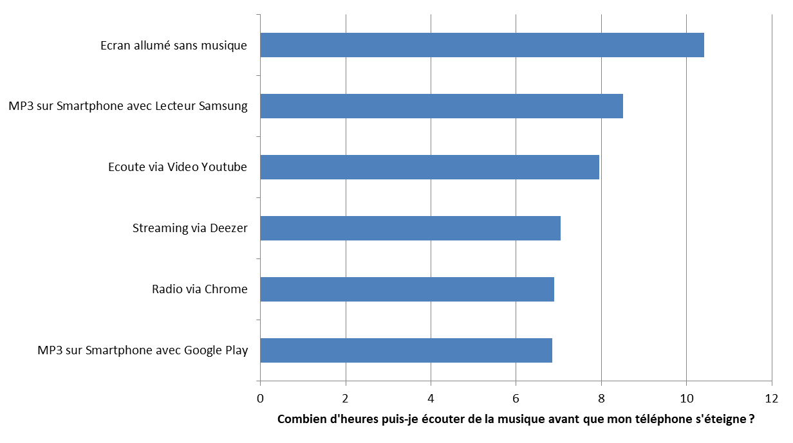
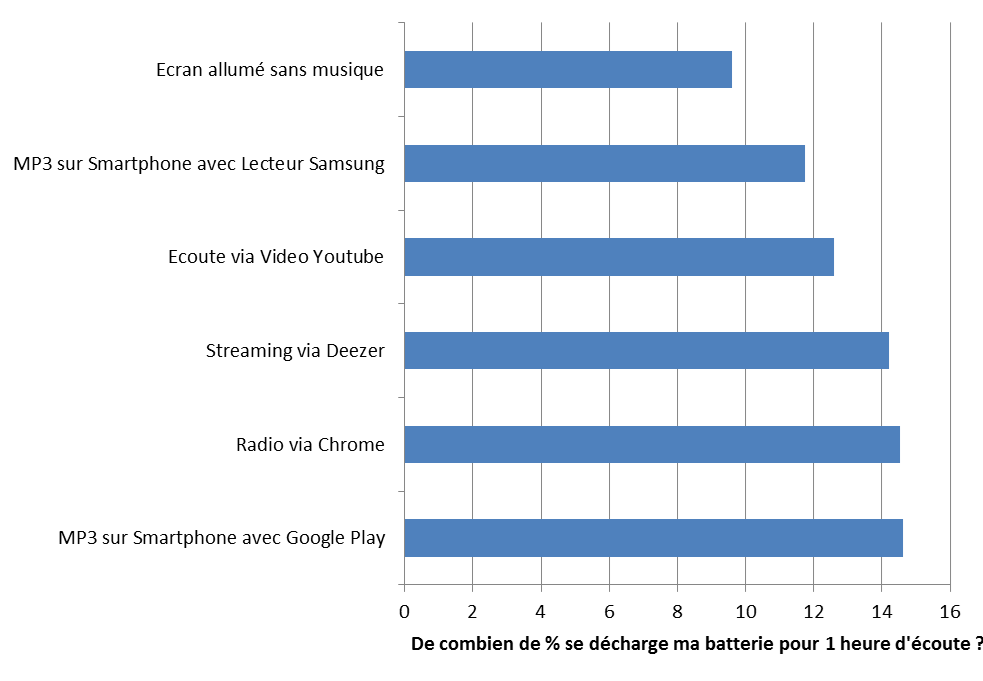
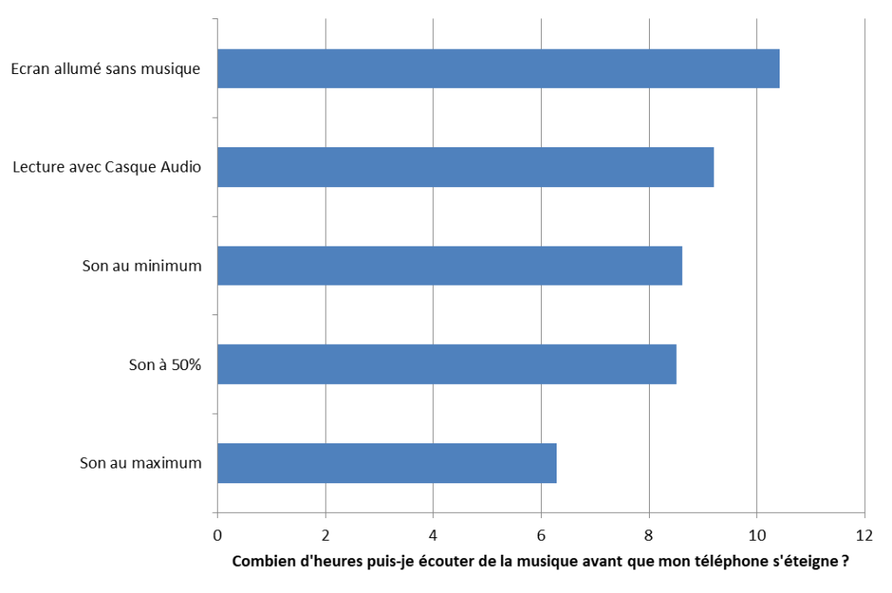
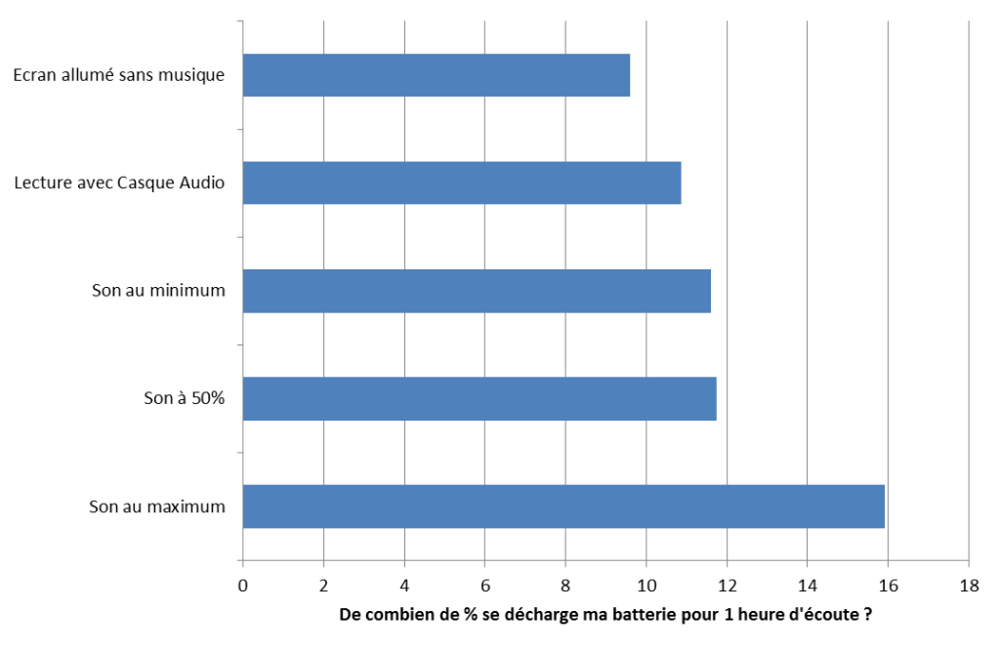
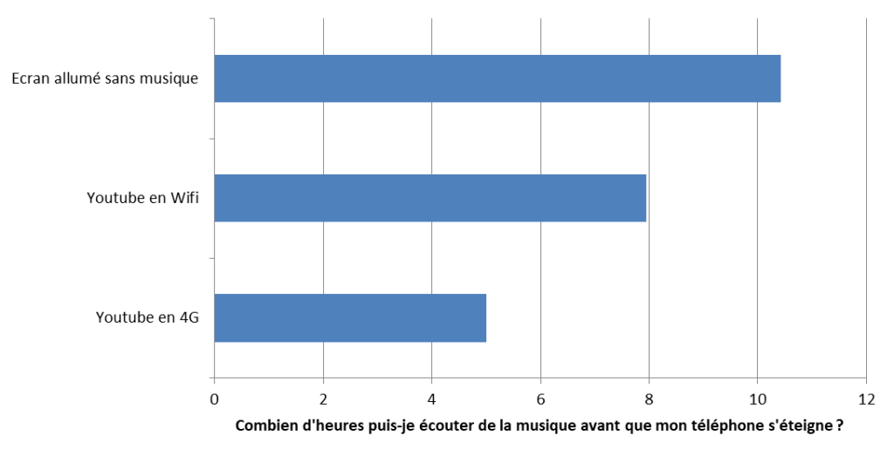
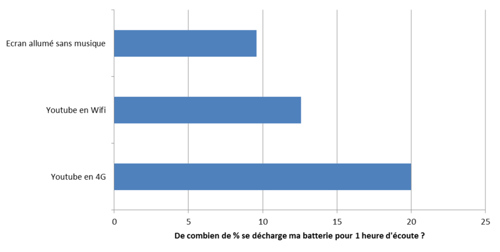
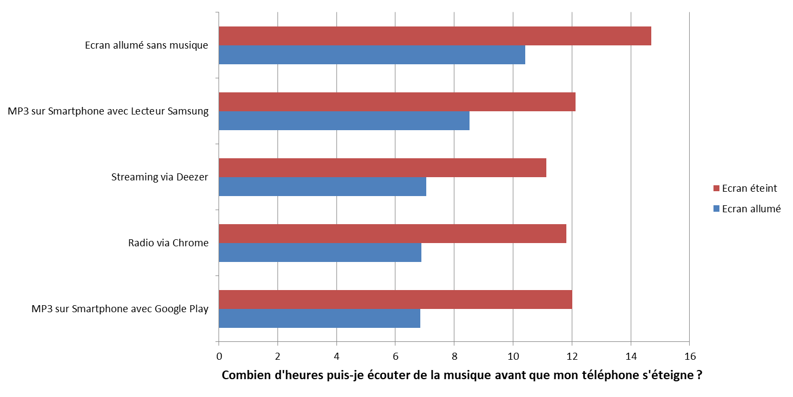
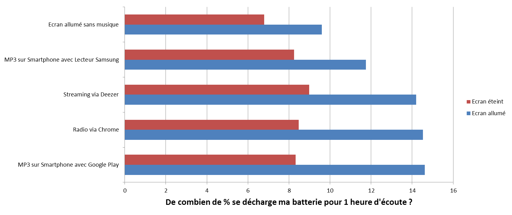
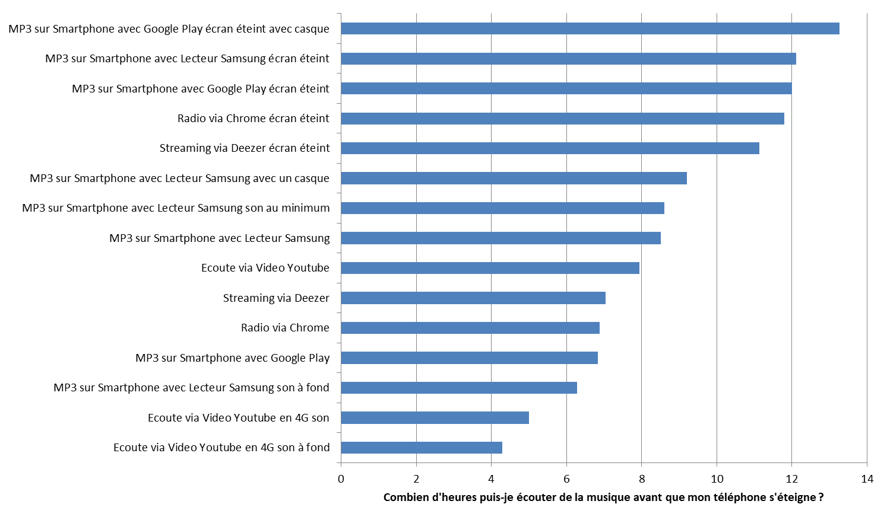

Votre batterie de téléphone se décharge trop vite ? Lors de l’achat de votre smartphone, le vendeur vous a promis une autonomie de 3 jours. Au bout d’un mois, vous le rechargez tous les jours (le téléphone, pas le vendeur). Peut-être que le vendeur (voir le constructeur de mèche avec lui) vous a menti sur les capacités réelles du téléphone ? Depuis l’affaire Volkswagen, nous ne sommes plus sûrs de rien… Mais le problème est probablement plus complexe. Vous n’utilisez peut-être pas correctement votre smartphone ou alors vous ne choisissez pas les services les plus adaptés à vos usages.
Article à lire avec quelques pistes à écouter
Musiques associées au thème de l’article et en fonction des goûts (Avec un rapport lointain au sujet, je l’avoue):
La musique ou l’autonomie du téléphone, il faut choisir !
Il est loin le temps où vous écoutiez de la musique avec un lecteur MP3 ou même un lecteur cassette (pour les plus anciens d’entre nous). Maintenant, comme pour beaucoup d’usages, le smartphone a remplacé les différents lecteurs. On ne recharge plus de pile, mais on recharge la batterie du smartphone. Surtout que les moments sont nombreux au quotidien pour écouter de la musique : dans les transports en commun, au bureau, en voiture, le soir pour s’endormir…
Et les moyens d’écouter de la musique sont multiples : applications telles que Deezer, Live Radio, Youtube, MP3 stocké localement… Mais quel est le moyen le moins consommateur pour votre batterie ?
Protocole de mesure
Cette étude a été réalisée sur un smartphone Samsung Galaxy S7. Certains résultats peuvent varier sur différents devices, cependant ils permettent d’obtenir une tendance sur les services numériques qui ont été évalués.
Je veux choisir le service le moins consommateur
Vous avez donc toujours l’écran allumé et vous aimez particulièrement zapper entre les pistes. Considérons que vous êtes en Wi-Fi et que le volume du son est sur un niveau moyen.


Vous pouvez réduire jusqu’à 3h30 l’autonomie de votre téléphone en fonction du service utilisé. Il est généralement préférable de lire un MP3 que vous aurez stocké sur le téléphone. Vous n’utilisez pas de connexion internet, il y a donc moins de consommation qui en découle. Cependant, on observe que des applications comme Google Play auront tendance à consommer beaucoup plus d’autonomie qu’une lecture de musique sur Internet (Deezer, Spotify, Youtube…). Attention donc au choix du lecteur pour vos fichiers MP3. Android vous indiquera dans tous les cas les applications les plus consommatrices, vous pourrez alors faire votre choix.
La radio sur Internet n’est pas la solution la plus intéressante. On préférera des podcasts téléchargés de façon anticipée. En effet, la connexion internet couplée au navigateur font que les players radio ne ne sont pas les plus efficaces.
Et si je baisse le volume du son ?
Est-ce que le volume du son a une incidence sur la consommation de batterie ?


Oui et non, pour un niveau bas à moyen, la consommation ne varie pas beaucoup. Cependant, si vous utilisez votre smarphone comme une enceinte pour diffuser du son autour de vous, la consommation va être plus élevée (2h20 d’autonomie en moins). Si vous souhaitez écouter le son plus fort, le casque sera plus utile. N’attendez cependant pas à une réduction importante de la consommation avec un casque.
Et si je suis en mobilité avec de la 4G ?
Écouter de la musique dans les transports en commun où il n’y pas de réseau Wi-Fi, c’est bien ?


Et bien cela à un coût, et un coût non négligeable. Il est préférable de se connecter à un Hotspot Wi-Fi.
Le summum de la consommation étant d’écouter de la musique à fond sur l’application Youtube et le tout en 4G.
Et si j’éteins mon écran ?
Certaines applications permettent de passer en mode veille (ou en arrière-plan) et de laisser l’écran s’éteindre. Si c’est le cas, vous allez pouvoir économiser de la batterie. Le classement entre les services ne varie presque pas, vous diminuez « juste » la consommation. Deezer devient en effet le plus consommateur. Il semble que les traitements en tâche de fond ne soit pas assez optimisés au sein de l’application.


Et alors ?
Les usages varient, en fonction des goûts, des habitudes, du smartphone… et les consommations d’énergie aussi. On peut ainsi obtenir une « fourchette » d’autonomie en lecture continue de 4h à 13h.

Il est également possible de modifier ses habitudes pour augmenter l’autonomie. Pour aller plus loin dans cette démarche : identifier les applications consommatrices sur les OS et interpeller les éditeurs en leur demandant de s’améliorer est tout à fait possible.
C’est green ?
Oui, moins consommer d’énergie va permettre de réduire la sollicitation de la batterie, vous allez ainsi effectuer moins de cycles de charge, la longévité de la batterie sera plus élevée (ce sont les cycles de rechargement/déchargement qui l’use), et vous prolongerez ainsi la durée de vie globale de la batterie (qui est très polluante) voir de votre smartphone. CQFD.
Cette étude a été réalisée avec les outils GREENSPECTOR qui permettent de mesurer la consommation d’énergie des applications sur des téléphones. Pour plus d’information sur les méthodologies et les outils, je vous invite à parcours ce blog.